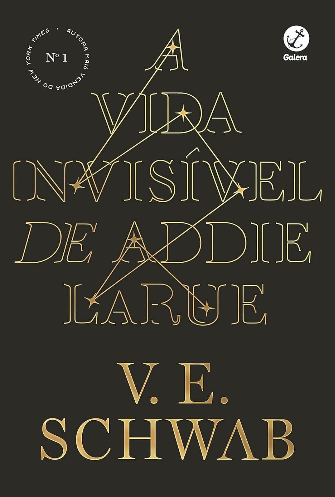

CLUBES
Os clubes funcionam de maneira simples e prática. Pense em um grupo com seus amigos, no qual vocês falam de livros.
Vocês vão poder acompanhar porcentagem de leitura, livro que estão lendo, que já leram e também podem fazer desafios entre si.
Além disso, para os tímidos, existem os clubes privados, com somente as pessoas que o criador do clube selecionar.
LIVROS
Na aba de livros, exisem livros para selecionar que estão lendo, ou querem ler com o clube. Eles são separados em categorias (alguns existem em mais de uma categoria) e também existe a opção de adicionar um livros caso ele não exista em nenhuma das categorias. - Se você clicar no livro ele vai te levar diretamente para o site da Amazon, caso você queira comprar ele.
EXTRAS
Existem algumas coisas extras, como resenhas, timer, metas e desafios. Em resenhas, você vai poder ler resenhas de outras pessoas sobre todos os livros do site, além de escrever a sua própria. Em timer, você pode contar o tempo que levou lendo ou também colocar um alarme caso queira ler apenas por um tempo específico. Já em metas e desafios, você estabelece suas metas, você pode querer ler 40 páginas por dia, além disso pode selecionar um desafio, como ler 40 livros em um ano.